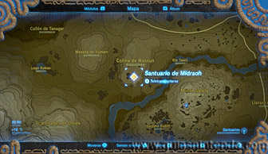
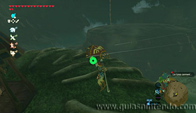
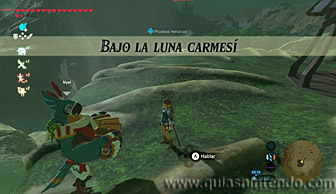
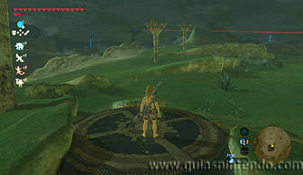
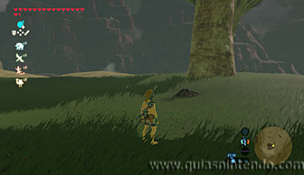
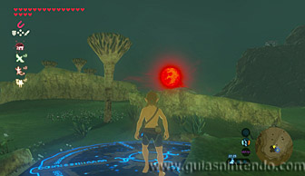
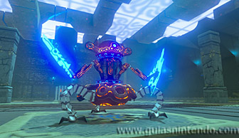
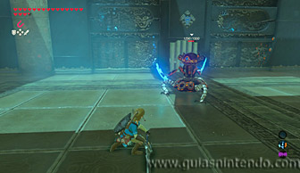
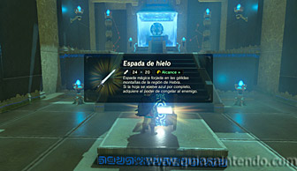
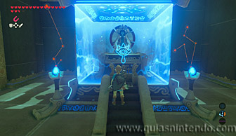

Se encuentra en la región de la torre de las colinas, al suroeste de la torre. Tendrás que completar una Prueba heroica (Bajo la luna carmesí) para que aparezca la entrada.

Cuando llegues a la localización del santuario no verás la entrada, así que sube a la seta gigante más grande de las que hay. Puedes hacerlo fácilmente usando la Furia de Revali. Allí arriba verás a Nyel y podrás hablar con él para activar la prueba.

Una vez activada tendrás que despojarte de todo tu equipo y vestuario (incluido el
arco y escudo) para posarte sobre el pedestal que hará aparecer el santuario. Sin embargo, según
te han indicado en la canción de Nyel, tendrá que ser una noche en donde haya Luna
Carmesí o no funcionará.
Si no es una noche con esa luna o tienes algún artículo equipado no se completará
la prueba heroica.

Lo más sencillo es que crees una hoguera bajo la gran seta gigante y duermas hasta la
noche. Después despójate de todo el equipo y colócate sobre el pedestal. Si no
ocurre nada, vuelve a dormir y repite el proceso.
No hace falta esperar a que veas aparecer la luna, si te colocas en el pedestal (y no estás
equipado con nada) el santuario se activará aunque no se vea la luna (eso sí, solo entre
las 21:00 y la 01:00). Como al dormir hasta la noche el tiempo avanza hasta las 21:00, solo debes dormir
en la hoguera y colocarte sobre el pedestal para comprobar si es una noche con luna carmesí o no.

Una vez que aparezca la entrada del santuario entra en él y derrota a un miniguardián 3.0.

Cuando acabes con él abre el cofre que contiene una Espada de hielo y después alcanza el altar para conseguir el símbolo de valía.
